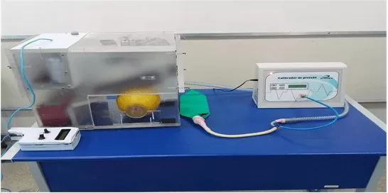

Profissional de Tecnologia com formação em Gestão da TI, pós-graduação em Engenharia de Software e atualmente cursando Ciências da Computação. Combinando experiência prática em desenvolvimento com sólidos conhecimentos teóricos para criar soluções inovadoras e eficientes.
Sou um profissional apaixonado por tecnologia e inovação, com trajetória marcada por constante busca por conhecimento e aprimoramento. Minha jornada na área de programação começou em 2015 durante minha primeira graduação em Engenharia Elétrica, onde tive meu primeiro contato com a lógica de programação e desenvolvimento de sistemas.
Diante dos desafios de conciliar trabalho e estudos, adaptei minha abordagem educacional, migrando para modalidades online que me permitiram maior flexibilidade sem comprometer a qualidade do aprendizado. Essa adaptação demonstra minha capacidade de resiliência e solução de problemas - características essenciais para um profissional de TI.
Minha formação multidisciplinar, que inclui Gestão da Tecnologia da Informação, Eletrotécnica e Engenharia de Software, me proporciona uma visão holística dos projetos, permitindo-me entender tanto os aspectos técnicos quanto gerenciais das soluções tecnológicas.
Atualmente, como estudante de Ciências da Computação, continuo expandindo meus conhecimentos em algoritmos, estruturas de dados e desenvolvimento de software, sempre com foco na aplicação prática desses conceitos para resolver problemas reais.
Bacharelado em Ciências da Computação | 2024 - Presente
Cursando
Pós-Graduação em Engenharia de Software | 2022
Trabalho de conclusão: "O Papel do Engenheiro de Software na Indústria dos Games"
Graduação em Gestão da Tecnologia da Informação | 2020
Técnico em Eletrotécnica | 2020
Montador de Fabricação | Set 2020 - Mai 2024
Competências desenvolvidas: atenção aos detalhes, trabalho em equipe, seguimento de protocolos, resolução de problemas técnicos.
Auxiliar de Escritório | Jan 2019 - Jun 2019
Competências desenvolvidas: organização, análise de dados, melhoria de processos, gestão de tempo.
Auxiliar de Escritório | Out 2015 - Jan 2019
Competências desenvolvidas: liderança, gestão de pessoas, solução de problemas, trabalho sob pressão.
Publicação acadêmica no Núcleo do Conhecimento abordando soluções tecnológicas para desafios na área da saúde, especialmente relevantes no contexto pandêmico.
Ver Publicação Estou aberto a oportunidades e colaborações. Sinta-se à vontade para entrar em contato:
Email: Jonathantrovato@gmail.com
Telefone: (32) 99128-3984
Localização: Minas Gerais, Brasil